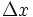
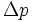
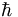

De: La Frikipedia, la enciclopedia extremadamente seria.
De: La Frikipedia, la enciclopedia extremadamente seria. De: La Frikipedia, la enciclopedia extremadamente seria.

|
Este artículo necesita ser ilustrado. Busca una afoto en nuestro depósito de imágenes o donde sea y ponla, pero que no sea pr0n, que se cabrea el señor del adSense y nos corta el grifo de los dólare. Y sin dólare no hay servidor... |

|
FRIKIPEDIA QUIERE QUE ESTA DEFINICIÓN
PASE A SER UN ARTÍCULO FRIKIPÉDICO La información contenida en este artículo es una mínima parte de su jugo total, así que ponte los guantes, saca el tupperwere y empieza a exprimir el tema. Si lo haces serás recompensado con una galleta en almíbar y algo más. |
Nota:No se puede afirmar con total precisión que este artículo trate acerca del Principio de Incertidumbre
«El Principio de Incertidumbre es, ciertamente, incierto, espera... si es cierto que es incierto, entonces es incierto, pero yo no puedo estar seguro de que algo es cierto si estoy seguro que es incierto... buff, pasapalabra. Perdón, se me quema la sopa de puerros al paracetamol»
~ Txumari Alfaro Física Cuántica para novatos, Alfaguara, 1810
«Si, es cierto, el Principio de Incertidumbre lo inventé yo, porque no estaba segura de dónde había dejado el móvil y a la vez tampoco me acordaba si tenía móvil. Da igual, me voy de compras.»
~ Leticia Sabater en declaraciones a Diez Segundos, antes de entrar a una boutique D&G
El Principio de Incertidumbre afirma que un gato puede estar vivo y fiambre a la vez, que Andorra es un país y una ciudad simultáneamente y que Ronaldo y Ronaldinho son ambos el mejor jugador del mundo del 2005. Esta es uno de los principios más poderosos del universo tanto es así que la aplicación práctica de esta aseveración puede, incluso, impulsar naves interestelares.
La versión social del Principio de Incertidumbre afirma que, si sabes dónde está tu novio/a, no puedes saber qué está haciendo, y si sabes qué está haciendo, no puedes saber donde está.
Físicamente, el Principio de Incertidumbre indica, en céntimos de euro, la probabilidad de que un jugador del Madrid se tire en el área cuando un árbitro se encuentre a una distancia menor que 2,4·10² diámetros encefálicos de Raúl.
Matemáticamente se describe como:
Donde  es la distancia del balón al portero,  el precio del balón y  es la Constante de Planck, cuyo valor se publicó en el BOE 10/2012, tras finalizar las olimpiadas de Londres.
| | |||
|
Materia
Magnitudes
Mecánica
Cinética y Dinámica
Energía
Física Cuántica y Nuclear
Científicos
|
Autor(es):